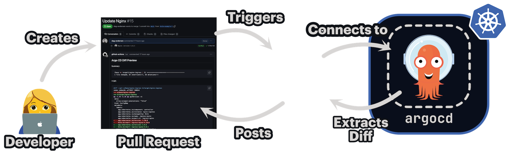

Connecting to a cluster with Argo CD pre-installed🔗

Instead of spinning up an ephemeral cluster for each diff preview, you can connect to a cluster with Argo CD already installed. This saves approximately 60–90 seconds per run.
Important: We highly recommend not using your production Argo CD instance for rendering manifests. Instead, install a dedicated Argo CD instance for diff previews.
The Argo CD server does not need to be exposed to the internet, since argocd-diff-preview connects via a KubeConfig file (or service account).
To use this feature, mount a valid KubeConfig with access to the cluster and provide these options:
This will skip cluster creation and connect to Argo CD via port-forwarding in the specified namespace.
Requirements🔗
- The
defaultArgo CD project must exist. - The required secrets for authentication have already been added to the cluster.
Example Demo🔗
Step 1: Create cluster (skip if you already have a cluster with Argo CD installed)🔗
kind create cluster
helm repo add argo https://argoproj.github.io/argo-helm
helm install argo-cd argo/argo-cd --version 8.0.3 --create-namespace --namespace argocd-diff-preview
# Wait for Argo CD to be ready
kubectl wait --for=condition=ready pod -l app.kubernetes.io/name=argocd-server -n argocd-diff-preview
Step 2: Clone the base and target branches🔗
# Clone the base branch into a subfolder called `base-branch`
git clone https://github.com/dag-andersen/argocd-diff-preview base-branch --depth 1 -q
# Clone the target branch into a subfolder called `target-branch`
git clone https://github.com/dag-andersen/argocd-diff-preview target-branch --depth 1 -q -b helm-example-3
Step 3: Run the tool🔗
Make sure you:
- Mount the KubeConfig into the container (-v ~/.kube:/root/.kube)
- Disable cluster creation (--create-cluster=false)
- Specify the Argo CD namespace (--argocd-namespace=<ns>)
docker run \
--network host \
-v ~/.kube:/root/.kube \
-v /var/run/docker.sock:/var/run/docker.sock \
-v $(pwd)/output:/output \
-v $(pwd)/base-branch:/base-branch \
-v $(pwd)/target-branch:/target-branch \
-e TARGET_BRANCH=helm-example-3 \
-e REPO=dag-andersen/argocd-diff-preview \
dagandersen/argocd-diff-preview:v0.1.24 \
--argocd-namespace=argocd-diff-preview \
--create-cluster=false
And then the output will look something like this:
✨ Running with:
✨ - reusing cluster with Argo CD pre-installed
✨ - base-branch: main
✨ - target-branch: helm-example-3
✨ - output-folder: ./output
✨ - argocd-namespace: argocd-diff-preview
✨ - repo: dag-andersen/argocd-diff-preview
✨ - timeout: 180 seconds
🔑 Unique ID for this run: 60993
🤖 Fetching all files for branch (branch: main)
🤖 Found 52 files in dir base-branch (branch: main)
...
🤖 Fetching all files for branch (branch: helm-example-3)
🤖 Found 52 files in dir target-branch (branch: helm-example-3)
...
🦑 Logging in to Argo CD through CLI...
🦑 Logged in to Argo CD successfully
🤖 Converting ApplicationSets to Applications in both branches
...
🤖 Patching 19 Applications (branch: main)
🤖 Patching 19 Applications (branch: helm-example-3)
🤖 Rendered 11 out of 38 applications (timeout in 175 seconds)
🧼 Waiting for all application deletions to complete...
🧼 All application deletions completed
🤖 Got all resources from 19 applications from base-branch and got 19 from target-branch in 7s
🔮 Generating diff between main and helm-example-3
🙏 Please check the ./output/diff.md file for differences
✨ Total execution time: 10s
Authenticate with Cloud Providers🔗
If you're connecting to a cluster on a cloud provider, you often use a plugin or ExecConfig to authenticate (for example, kubelogin for Azure AKS or aws eks get-token for AWS EKS).
You can check this by running kubectl config view --minify -o jsonpath='{.users[*].user}' and looking for the command field.
These plugins/binaries are not available inside the Docker image, so you'll need to run argocd-diff-preview as a standalone binary.
You can find installation instructions in the docs.